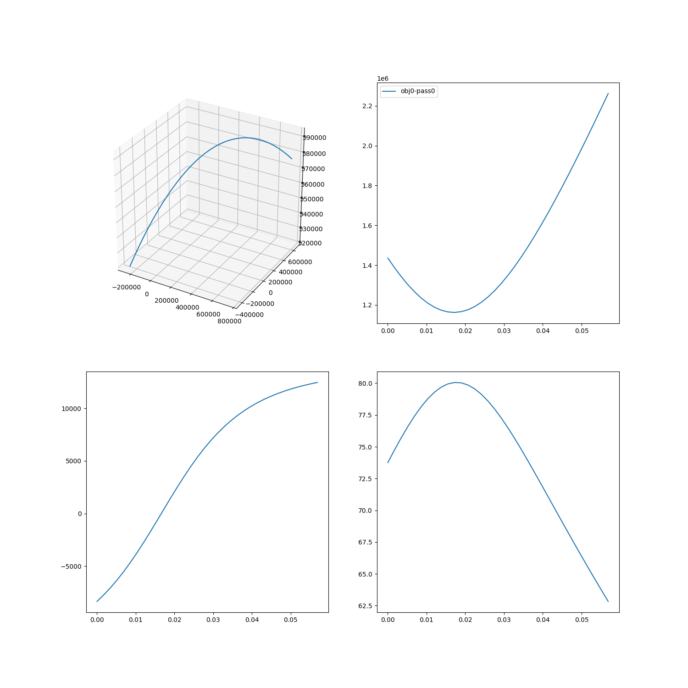

Note
Click here to download the full example code
An example scheduler for tracking¶

Out:
Space object 1 at epoch 53005.0 MJD:
a : 7.2000e+06 x : -1.2134e+06
e : 1.0000e-01 y : 2.5788e+06
i : 7.5000e+01 z : 6.2817e+06
omega: 0.0000e+00 vx: -2.1687e+03
Omega: 7.9000e+01 vy: -6.7605e+03
anom : 6.0000e+01 vz: 3.1307e+03
PARAMETERS: diameter = 1.000 m, drag coefficient = 2.300, albedo = 1.000, area = 1.000, mass = 1.000 kg
Space object 2 at epoch 53005.0 MJD:
a : 7.2000e+06 x : 1.7861e+06
e : 1.0000e-01 y : 6.2290e+06
i : 6.9000e+01 z : 0.0000e+00
omega: 0.0000e+00 vx: -2.8337e+03
Omega: 7.4000e+01 vy: 8.1254e+02
anom : 0.0000e+00 vz: 7.6794e+03
PARAMETERS: diameter = 1.000 m, drag coefficient = 2.300, albedo = 1.000, area = 1.000, mass = 1.000 kg
2020-07-10 16:49:47.506 INFO ; Tracking:get_passes(ind=0):propagating 177678 steps
2020-07-10 16:49:56.715 INFO ; Tracking:get_passes(ind=0):propagating complete
/home/danielk/IRF/IRF_GITLAB/pyant/pyant/coordinates.py:89: RuntimeWarning: invalid value encountered in greater
proj[proj > 1.0] = 1.0
/home/danielk/IRF/IRF_GITLAB/pyant/pyant/coordinates.py:90: RuntimeWarning: invalid value encountered in less
proj[proj < -1.0] = -1.0
/home/danielk/IRF/IRF_GITLAB/SORTS/sorts/passes.py:269: RuntimeWarning: invalid value encountered in less
check_st = zenith_st_ang < 90.0-station.min_elevation
2020-07-10 16:49:56.802 INFO ; Tracking:get_passes(ind=0):tx0-rx0 1 passes
2020-07-10 16:49:56.803 INFO ; Tracking:get_passes(ind=0):tx0-rx1 1 passes
2020-07-10 16:49:56.803 INFO ; Tracking:get_passes(ind=0):tx0-rx2 1 passes
2020-07-10 16:49:56.804 INFO ; Tracking:get_passes(ind=1):propagating 177678 steps
2020-07-10 16:50:05.799 INFO ; Tracking:get_passes(ind=1):propagating complete
2020-07-10 16:50:05.883 INFO ; Tracking:get_passes(ind=1):tx0-rx0 0 passes
2020-07-10 16:50:05.883 INFO ; Tracking:get_passes(ind=1):tx0-rx1 0 passes
2020-07-10 16:50:05.884 INFO ; Tracking:get_passes(ind=1):tx0-rx2 0 passes
2020-07-10 16:50:05.884 INFO ; Tracking:get_controllers
t [s] rx0 az rx0 el rx1 az rx1 el rx2 az rx2 el Controller Target
---------- -------- -------- --------- -------- -------- -------- ------------ --------
0.121569 210.805 46.4172 229.355 47.7409 218.643 55.5207 Tracker Object 1
6.32158 209.685 49.366 229.887 50.8385 218.212 59.1725 Tracker Object 1
12.5216 208.325 52.4891 230.533 54.1331 217.636 63.0241 Tracker Object 1
18.7216 206.643 55.7807 231.34 57.6242 216.83 67.0595 Tracker Object 1
24.9216 204.513 59.2264 232.376 61.305 215.632 71.253 Tracker Object 1
31.1216 201.744 62.7989 233.759 65.1603 213.681 75.5669 Tracker Object 1
37.3216 198.022 66.4519 235.703 69.1642 209.983 79.9439 Tracker Object 1
43.5216 192.814 70.1086 238.635 73.2751 200.575 84.2641 Tracker Object 1
49.7217 185.188 73.6369 243.544 77.4226 153.885 87.7447 Tracker Object 1
55.9217 173.545 76.7974 253.231 81.4581 72.0081 85.8281 Tracker Object 1
62.1217 155.783 79.1507 -82.3587 84.888 56.5953 81.759 Tracker Object 1
68.3217 132.013 80.056 -27.2615 85.7288 51.5964 77.6196 Tracker Object 1
74.5217 108.493 79.1712 9.27865 83.0537 49.1742 73.5949 Tracker Object 1
80.7217 91.1565 76.9291 22.8106 79.3384 47.7557 69.7377 Tracker Object 1
86.9217 79.8231 73.9856 29.0822 75.4786 46.8292 66.0728 Tracker Object 1
93.1217 72.3848 70.7621 32.6244 71.6841 46.18 62.6121 Tracker Object 1
99.3217 67.2911 67.4769 34.8894 68.0288 45.7022 59.3588 Tracker Object 1
105.522 63.6407 64.242 36.4616 64.5456 45.3378 56.3103 Tracker Object 1
111.722 60.9191 61.1165 37.6178 61.2497 45.0522 53.4601 Tracker Object 1
117.922 58.8225 58.1312 38.5053 58.1458 44.8237 50.7988 Tracker Object 1
124.122 57.1634 55.3006 39.2093 55.2324 44.6378 48.3154 Tracker Object 1
130.322 55.8211 52.6295 39.7826 52.5037 44.4845 45.998 Tracker Object 1
136.522 54.7151 50.1167 40.2595 49.9511 44.3568 43.8347 Tracker Object 1
142.722 53.7895 47.757 40.6634 47.5647 44.2495 41.8134 Tracker Object 1
148.922 53.0046 45.5433 41.0106 45.3337 44.1588 39.9229 Tracker Object 1
155.122 52.3317 43.4669 41.313 43.2469 44.0817 38.1524 Tracker Object 1
161.322 51.749 41.5191 41.5792 41.2936 44.0159 36.4917 Tracker Object 1
167.522 51.2402 39.6905 41.8159 39.4632 43.9597 34.9317 Tracker Object 1
173.722 50.7926 37.9723 42.0283 37.7458 43.9115 33.4637 Tracker Object 1
179.922 50.3963 36.3561 42.2202 36.1322 43.8703 32.08 Tracker Object 1
186.122 50.0434 34.8338 42.3949 34.6138 43.835 30.7735 Tracker Object 1
192.322 49.7274 33.3979 42.5549 33.1827 43.8049 29.5376 Tracker Object 1
198.522 49.4433 32.0414 42.7023 31.8317 43.7794 28.3667 Tracker Object 1
204.722 49.1867 30.7581 42.8387 30.5542 43.7579 27.2553 Tracker Object 1
2020-07-10 16:50:05.981 INFO ; Tracking:get_controllers
2020-07-10 16:50:05.982 INFO ; Scheduler:__call__:34 events found between 0.1 and 208.4
2020-07-10 16:50:05.982 INFO ; Obs.Param.:calculate_observation:(tx=0, rx=0), len(t) = 34
2020-07-10 16:50:06.166 INFO ; Obs.Param.:calculate_observation:complete
2020-07-10 16:50:06.166 INFO ; Tracking:get_controllers
2020-07-10 16:50:06.167 INFO ; Scheduler:__call__:34 events found between 0.1 and 207.4
2020-07-10 16:50:06.167 INFO ; Obs.Param.:calculate_observation:(tx=1, rx=1), len(t) = 34
2020-07-10 16:50:06.351 INFO ; Obs.Param.:calculate_observation:complete
2020-07-10 16:50:06.352 INFO ; Tracking:get_controllers
2020-07-10 16:50:06.352 INFO ; Scheduler:__call__:31 events found between 0.1 and 189.8
2020-07-10 16:50:06.352 INFO ; Obs.Param.:calculate_observation:(tx=2, rx=2), len(t) = 31
2020-07-10 16:50:06.522 INFO ; Obs.Param.:calculate_observation:complete
import numpy as np
import matplotlib.pyplot as plt
from tabulate import tabulate
import sorts
eiscat3d = sorts.radars.eiscat3d
from sorts.scheduler import PriorityTracking, ObservedParameters
from sorts import SpaceObject
from sorts.profiling import Profiler
from sorts.propagator import SGP4
Prop_cls = SGP4
Prop_opts = dict(
settings = dict(
out_frame='ITRF',
),
)
logger = sorts.profiling.get_logger('tracking')
objs = [
SpaceObject(
Prop_cls,
propagator_options = Prop_opts,
a = 7200e3,
e = 0.1,
i = 75,
raan = 79,
aop = 0,
mu0 = 60,
mjd0 = 53005.0,
d = 1.0,
oid = 1,
),
SpaceObject(
Prop_cls,
propagator_options = Prop_opts,
a = 7200e3,
e = 0.1,
i = 69,
raan = 74,
aop = 0,
mu0 = 0,
mjd0 = 53005.0,
d = 1.0,
oid = 2,
)
]
for obj in objs: print(obj)
class ObservedTracking(PriorityTracking, ObservedParameters):
def generate_schedule(self, t, generator):
data = np.empty((len(t),len(self.radar.rx)*2+1), dtype=np.float64)
data[:,0] = t
names = []
targets = []
for ind,mrad in enumerate(generator):
radar, meta = mrad
names.append(meta['controller_type'].__name__)
targets.append(meta['target'])
for ri, rx in enumerate(radar.rx):
data[ind,1+ri*2] = rx.beam.azimuth
data[ind,2+ri*2] = rx.beam.elevation
data = data.T.tolist() + [names, targets]
data = list(map(list, zip(*data)))
return data
scheduler = ObservedTracking(
radar = eiscat3d,
space_objects = objs,
timeslice = 0.1,
allocation = 0.1*200,
end_time = 3600*6.0,
priority = [0.2, 1.0],
logger = logger,
)
sched_data = scheduler.schedule()
rx_head = [f'rx{i} {co}' for i in range(len(scheduler.radar.rx)) for co in ['az', 'el']]
sched_tab = tabulate(sched_data, headers=["t [s]"] + rx_head + ['Controller', 'Target'])
print(sched_tab)
datas = []
for ind in range(len(objs)):
data = scheduler.observe_passes(scheduler.passes[ind], space_object = objs[ind], snr_limit=False)
datas.append(data)
# print(data)
fig = plt.figure(figsize=(15,15))
axes = [
[
fig.add_subplot(221, projection='3d'),
fig.add_subplot(222),
],
[
fig.add_subplot(223),
fig.add_subplot(224),
],
]
for ind in range(len(objs)):
for pi in range(len(scheduler.passes[ind][0][0])):
ps = scheduler.passes[ind][0][0][pi]
axes[0][0].plot(ps.enu[0][0,:], ps.enu[0][1,:], ps.enu[0][2,:], '-')
dat = datas[ind][0][0][pi]
if dat is not None:
axes[0][1].plot(dat['t']/3600.0, dat['range'], '-', label=f'obj{ind}-pass{pi}')
axes[1][0].plot(dat['t']/3600.0, dat['range_rate'], '-')
axes[1][1].plot(dat['t']/3600.0, 10*np.log10(dat['snr']), '-')
axes[0][1].legend()
plt.show()
Total running time of the script: ( 0 minutes 19.497 seconds)